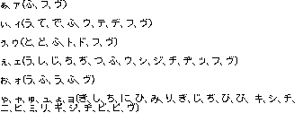
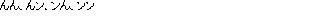

|
|
Voice Recognition System
Voice Recognition System Definition
Features of the Voice Recognition System
Table 1 Main Features of the Voice Recognition System
Voice Recognition System Configuration
Figure 26.8.1 Voice Recognition System Hardware Configuration Diagram
Voice Recognition Structure
Figure 26.8.2 Voice Recognition Structure
The processing flow is shown in the figure below. A description of each step follows.
Figure 26.8.3 Voice Recognition Processing Flow Chart
When the status moves from VOICE_STATUS_END to VOICE_STATUS_READY, the Get Recognition Results command can be executed. If the Get Recognition Results command is executed while the status is VOICE_STATUS_END, the status will switch to VOICE_STATUS_READY after completion of the Get Recognition Results command. Once the status has switched to VOICE_STATUS_READY, the next Start Recognition command can be executed.
The variable which indicates the current status is stored in the voice recognition system control structure. Please see Section 26.8.6.1, "Initialization Function," for details.
Assembling the Voice Recognition System Program
First, initialize the Voice Recognition System. Next, initialize the registered word dictionary and register the words to be recognized. Once word registration is completed, the program moves to voice recognition processing. By starting voice recognition, voice input from the microphone can be acquired as words. Execute the Get Voice Recognition Results function to acquire a word.
The library functions for the Voice Recognition System which perform processing at each step of the flow are explained in Section 26.8.6, "Voice Recognition System Function Specifications." Detailed programming procedures, including error branching, etc., are explained in Section 26.8.7, "Examples Using Voice Recognition System Functions."
Figure 26.8.4 Assembling the Voice Recognition System Program
Voice Recognition System Function Specifications
Initialization Function — osVoiceInit( )
Syntax
The Voice Recognition System is a peripheral device for the N64 which makes it possible for words spoken by the user to be recognized during an N64 game. To use the system, insert the plug on the Voice Recognition Unit into the N64 controller port, thereby connecting the special microphone on the Voice Recognition Unit. This makes it possible to make the characters in the game move and respond by voice in addition to the conventional controller-only interface. This allows the game to proceed with a more "present" feel, for instance, allowing the player to give verbal commands which put secondary characters into action, while moving the main character with the controller.
The main features of the Voice Recognition System are shown below.
Item
Function
Voice recognition format
Semisyllabic voice recognition system
Language recognized
Japanese words (delineates one word by a 0.4 second silence after pronunciation is completed)
Speakers recognized
Any speaker (speaker needs no specific prior training)
Maximum registered words Maximum 255 words (about 80 words at 5 syllables per word)
Characters per word
Maximum 17 characters
Text registration method
Enter using shift-JIS code
Maximum pronunciation length
About 10 seconds (any sound in excess of the maximum pronunciation length is processed as noise)
Recognition result output method
Words closest to voice input are output ranked 1st ~ 5th
The Voice Recognition System configuration is shown below. The system used by inserting the plug on the Voice Recognition Unit into the N64 controller port, thereby connecting the special microphone on the Voice Recognition Unit. Since power is supplied by the N64, batteries are not needed.
Words to be recognized by the Voice Recognition System are placed in a registered word dictionary. Words can be freely registered in the registered word dictionary from the program side. The words which are determined to match closest to the voice input, are output from among these registered words. The Voice Recognition structure is shown in the figure below. A description of each step follows.
Input the words that are to be recognized using the SJIS code. The words which have been input are converted to the format necessary for voice recognition processing and registered in the dictionary.
The user’s voice is input via the special microphone connected to the Voice Recognition System. The input voice is then converted into the format necessary for voice recognition processing.
The voice input is compared with the patterns of the words registered in the dictionary and a distance value (a numeric value expressing how different the voice input is from the word to which it is being compared) is computed.
The words from among those words registered in the dictionary with the smallest distance values are output ranked in order from 1st to 5th place.
(VOICE_STATUS_READY)
(VOICE_STATUS_START)
(VOICE_STATUS_CANCEL)
(VOICE_STATUS_BUSY)
(VOICE_STATUS_END)
Following is a simple example of the flow of a program for performing voice recognition.
The library functions used when the Voice Recognition System is handled by an N64 program are explained below. There are a total of 10 Voice Recognition System-related functions.
osVoiceInit() function
osVoiceClearDictionary() function
osVoiceSetWord() function
osVoiceCheckWord() function
osVoiceCountSyllables() function
osVoiceMaskDictionary() function
osVoiceStartReadData() function
osVoiceGetReadData() function
osVoiceStopReadData() function
osVoiceControlGain() function
Initialize Voice Recognition System control structure and hardware
#include <ultra64.h>
s32 osVoiceInit(OSMesgQueue *siMessageQ, OSVoiceHandle *hd, int channel);
SiMessageQ :Message queue initialized in connection
with OS_EVENT_SI
hd :Voice Recognition System control structure
channel :Controller channel number
Description
The osVoiceInit() function initializes the Voice Recognition System. It initializes both the hardware and the Voice Recognition System control structure. Consequently, there is no need to initialize the hd structure on the application side. Call this function first when using the Voice Recognition System.
It is recommended that you check to see which device is connected to a particular port prior to initialization. Standard controllers and peripheral devices other than the Voice Recognition System may be inserted into the controller ports as well. This check can be accomplished with the osContStartQuery() function and the osContGetQuery() function. The Voice Recognition System is connected if the value of the member variable "errno" of the OSContStatus structure is 0 (zero), and if the AND (logical product) of the value for type and CONT_TYPE_MASK is CONT_TYPE_VOICE.
siMessageQ is the message queue initialized in connection with OS_EVENT_SI. Please refer to the osSetEventMesg() function in the "N64 Function Reference Manual," regarding how to establish this connection.
channel is the channel number of the controller port to which the Voice Recognition Unit is connected. It is a value 0~3.
The Voice Recognition System control structure OSVoiceHandle is configured as follows.
typedef struct {
OSMesgQueue *__mq; /* SI message queue */
int __channel; /* Controller port No. */
s32 __mode; /* Used within the OS */
u8 cmd_status; /* Command status */
} OSVoiceHandle;
Do not change the values of these various members in the application. In addition, the only member variable which is referred to and which has any meaning is cmd_status. The member variables other than cmd_status are used by the system and therefore do not need to be referred to by the application.
The member variable "cmd_status" indicates the voice recognition command status. When the voice recognition command status is checked within the osVoiceGetReadData() function’s voice recognition library, that value is kept in cmd_status. The following values can be handled by cmd_status. Please see Section 26.8.4.2, "Status When Voice Recognition is Running," for details on each status.
Table 26-2 Values Handled by cmd_status
| Definition Name | Value | Description |
| VOICE_STATUS_READY | 0 | Stop/End |
| VOICE_STATUS_START | 1 | Voice Undetected (no voice input) |
| VOICE_STATUS_CANCEL | 3 | Cancel (cancel extraneous noise) |
| VOICE_STATUS_BUSY | 5 | Detected/Detecting (voice being input, recognition processing under way) |
| VOICE_STATUS_END | 7 | End recognition processing (enable execution of Get Recognition Results command) |
The returned value is an error code. A 0 (zero) is returned when processing ends normally. If an error occurs, this function has the following error codes.
CONT_ERR_NO_CONTROLLER
CONT_ERR_DEVICE
CONT_ERR_VOICE_NO_RESPONSE
CONT_ERRO_CONTRFAIL
CONT_ERR_INVALID
Initialize Registered Word Dictionary Function — osVoiceClearDictionary( )
Syntax
Nothing is connected to the controller port.
Something other than the Voice Recognition System is connected to the controller port.
There was no response from the Voice Recognition System. There may be a problem with the hardware.
There was a data transmission failure. There is a problem in the Voice Recognition System connection.
There is an error in the function call method or in the argument. This error will not occur if the function is being used correctly. Write your program so that this error does not occur when development is completed.
Initialize Voice Recognition System word registration dictionary
#include <ultra64.h>
s32 osVoiceClearDictionary(OSVoiceHandle *hd, us words);
hd : Voice Recognition System control structure
words : Number of words registered
Description
The osVoiceClearDictionary() function initializes the registered word dictionary for the Voice Recognition System. The dictionary is initialized so that the specified number of words can be registered in the dictionary. Words cannot be registered with the osVoiceSetWord before the dictionary is initialized with the osVoiceClearDictionary() function.
hd is the Voice Recognition System control structure. The Voice Recognition System must be initialized with the osVoiceInit() function before the osVoiceClearDictionary() function is called. The number of words to be registered is specified in words. 1~255 words can be registered in the dictionary.
The returned value is an error code. A 0 (zero) is returned when processing ends normally. If an error occurs, this function has the following error codes.
CONT_ERR_NO_CONTROLLER
Nothing is connected to the controller port.
CONT_ERR_DEVICE
Something other than the Voice Recognition System is connected to the controller port.
CONT_ERR_VOICE_NO_RESPONSE
There was no response from the Voice Recognition System. There may be a problem with the hardware.
CONT_ERRO_CONTRFAIL
There was a data transmission failure. There is a problem in the Voice Recognition System connection.
CONT_ERR_INVALID
There is an error in the function call method or in the argument. This error will not occur if the function is being used correctly. Write your program so that this error does not occur when development is completed.
Register Words into Dictionary Function — osVoiceSetWord( )
Register words to the Voice Recognition System dictionary
Syntax
#include <ultra64.h> s32 osVoiceSetWord(OSVoiceHandle *hd, u8 *word) hd : Voice Recognition System control structure word : Word to be registered
Description
The osVoiceSetWord() function is for registering words in the Voice Recognition System dictionary. hd is the Voice Recognition System control structure. The Voice Recognition System must be initialized with the osVoiceInit() function before the osVoiceSetWord() function is called.
The word (SJIS) to be registered is specified in "word." The word can be up to 17 characters long. Since calling the osVoiceSetWord() function once registers one word, execute osVoiceSetWord() multiple times to register multiple words. The number of words registered must match the number set by the osVoiceClearDictionary() function. Please note that an error will be generated when the osVoiceStartReadData() function is executed, if the number of words registered is greater than or less than the specified number of words.
The maximum number of words which can be registered in the dictionary is about 80 words, assuming 5 syllables per word. Therefore, while the maximum number of words which can be registered is set at 255, if there are several syllables per word, the dictionary may subsequently overflow the memory. In this case, voice recognition can be executed without an error being caused by the osVoiceStartReadData() function even if the number of registered words is less than the number set by the osVoiceClearDictionary() function.
The characters which can be registered and their codes are shown in the table below.
Table 3 Registerable Characters and Their Codes
In addition, the following restrictions apply to character combinations when registering words. Use the osVoiceCheckWord() function to check whether or not the word that you are trying to register can be registered in the Voice Recognition System. Use this in the case of game applications in which registered words will be input during debugging or by the game player.
Table 4 Restrictions Table #1
The returned value is an error code. A 0 (zero) is returned when processing ends normally. If an error occurs, this function has the following error codes.
CONT_ERR_NO_CONTROLLER
CONT_ERR_DEVICE
CONT_ERR_VOICE_NO_RESPONSE
CONT_ERRO_CONTRFAIL
CONT_ERR_INVALID
CONT_ERR_VOICE_WORD
CONT_ERR_VOICE_MEMORY
Check Registerable Words Function — osVoiceCheckWord( )
Syntax
Description
"word" specifies the word (SJIS) to be registered. An error will be returned if a word is specified which contains a character combination which does not satisfy the conditions listed in the table below.
Table 5 Restrictions Table #2
The returned value is an error code. A 0 (zero) is returned when processing ends normally. If an error occurs, this function has the following error codes.
CONT_ERR_VOICE_WORD
Count Semisyllables in Word Function — osVoiceCountSyllables( )
Syntax
Description
"word" specifies the word (SJIS) to registered. The number of semisyllables resulting from the calculation is substituted for *syllables.
The total number of semisyllables which can be registered in the Voice Recognition System dictionary is 880 (440 syllables). If more than this are registered with the osVoiceSetWord() function, a CONT_ERR_VOICE_MEMORY error will occur.
The number of semisyllables is calculated as follows. One semisyllable per word must be added as an offset value.
Table 6 Calculating Semisyllables
Mask Registered Words Function — osVoiceMaskDictionary( )
Syntax

Usage
Character
No limitation on use
Can be used only after specified characters
(Combinable characters)
Cannot be used at the beginning of a word
Cannot be used at the end of a word
Cannot be used in front of "—"
Cannot be used after "tsu" or "tsu"
Combinations which cannot be used
Nothing is connected to the controller port.
Something other than the Voice Recognition System is connected to the controller port.
There was no response from the Voice Recognition System. There may be a problem with the hardware.
There was a data transmission failure. There is a problem in the Voice Recognition System connection.
There is an error in the function call method or in the argument. This error will not occur if the function is being used correctly. Write your program so that this error does not occur when development is completed.
A word containing improper characters has been registered. The set word is invalidated and the word number is not incremented. Execute the osVoiceSetWord() function to register a proper word.
Dictionary memory overflow. However, if the recognition command is executed in this condition, normal recognition processing can be performed even if the number of words which have been set is less than the number of words set by the osVoiceClearDictionary() function. When this error is generated, manage the number of words actually set on the application side.
Check whether or not a word can be registered in the dictionary.
#include <ultra64.h>
s32 osVoiceCheckWord(u8 *word);
word : Word to be registered
The osVoiceCheckWord() function is for checking whether or not a specified word can be registered in the Voice Recognition System. Use this when the words to be registered will be input during debugging or by the game player.
Usage
Character
No limitation on use
Can be used only after specified characters
(Combinable characters)
Cannot be used at the beginning of a word

Cannot be used at the end of a word
Cannot be used in front of "—"
Cannot be used after "tsu" or "tsu"
Combinations which cannot be used

The word cannot be registered. This word cannot be registered in the voice recognition dictionary.
Count the number of semisyllables in a word
#include <ultra64.h>
void osVoiceCountSyllables(u8 *word, u32 *syllable);
word : Word to be registered
syllable : Number of semisyllables in word (Number of syllables times two)
The osVoiceCountSyllables() function is for calculating how many syllables there are when registering a specific word in the Voice Recognition System. By using this function, you can later determine how many words can be registered in the dictionary. It is convenient to use the function during debugging or when asking the game player to input registered words.
Type of Syllable
Number of Semisyllables
Conditions
Vowel only
2
Start of word
Vowel only
1
Anywhere but start of word
Consonant + vowel
2
Start of word, or anywhere but when start of word is Romanized by k, t, c, or p
Consonant + vowel
3
Anywhere but start of word, anywhere except when preceding character is a small "tsu," or when start of word is Romanized by k, t, c, or p
Consonant + diphthong
2
Small "ya" and the like. Start of word or when start of word is Romanized by k, t, c, or p
Consonant + diphthong
3
Small "ya" and the like. Anywhere but start of word, anywhere except when preceding character is a small "tsu," or when start of word is Romanized by k, t, c, or p
"n"
1
none
Long "—"
1
none
Assimilated sound - small "tsu"
1
none
Switch between recognizing words registered in the dictionary and eliminating words from recognition
#include <ultra64.h>
s32 osVoiceMaskDictionary(OSVoiceHandle *hd, u8 *maskpattern, int size);
hd : Voice Recognition System control structure
maskpattern : All words mask pattern
size : Number of bytes in maskpattern
Description
The osVoiceMaskDictionary() function is for masking words registered in the Voice Recognition System.
hd is the Voice Recognition System control structure. The Voice Recognition System must be initialized with the osVoiceInit() function before the osVoiceMaskDictionary() function is called.
Specify the word mask pattern in maskpattern. The mask data for all words are enumerated in maskpattern. The number of bytes in maskpattern is specified in size. In the mask data, one byte equals one word. A zero (0) indicates to mask (do not recognize a word) and a one (1) indicates not to mask (recognize a word). The word number (the number assigned the registered words in the order that they were registered) sequence in the mask data corresponds with the LSB to MSB sequence. In other words, bit 0 of the first byte corresponds with word No. 0, while bit 7 corresponds with word No. 7. If the number of words is not a multiple of 8, put zeros (0) in the remaining most significant bits of the last byte of the mask data.
If the osVoiceMaskDictionary() function has not been called, all of the words are unmasked.
The returned value is an error code. A 0 (zero) is returned when processing ends normally. If an error occurs, this function has the following error codes.
CONT_ERR_NO_CONTROLLER
Nothing is connected to the controller port.
CONT_ERR_DEVICE
Something other than the Voice Recognition System is connected to the controller port.
CONT_ERR_VOICE_NO_RESPONSE
There was no response from the Voice Recognition System. There may be a problem with the hardware.
CONT_ERRO_CONTRFAIL
There was a data transmission failure. There is a problem in the Voice Recognition System connection.
CONT_ERR_INVALID
There is an error in the function call method or in the argument. This error will not occur if the function is being used correctly. Write your program so that this error does not occur when development is completed.
Start Voice Recognition Function — osVoiceStartReadData( )
Start voice recognition by the Voice Recognition System
Syntax
#include <ultra64.h> s32 osVoiceStartReadData(OSVoiceHandle *hd); hd : Voice Recognition System control structure
Description
The osVoiceStartReadData() function is for starting recognition processing by the Voice Recognition System. Before starting voice recognition processing with the osVoiceStartReadData() function, the Voice Recognition System must be initialized with the osVoiceInit() function, the dictionary must be initialized with the osVoiceClearDictionary() function, and word registration must be performed with the osVoiceSetWord() function. Be absolutely sure to call the osVoiceStartReadData() function after calling these functions.
After calling the osVoiceStartReadData() function, recognition results can be obtained by calling the osVoiceGetReadData() function. In addition, once voice recognition has been started, call the osVoiceStopReadData() function to forcibly stop recognition.
The returned value is an error code. A 0 (zero) is returned when processing ends normally. If an error occurs, this function has the following error codes.
CONT_ERR_NO_CONTROLLER
Nothing is connected to the controller port.
CONT_ERR_DEVICE
Something other than the Voice Recognition System is connected to the controller port.
CONT_ERR_VOICE_NO_RESPONSE
There was no response from the Voice Recognition System. There may be a problem with the hardware.
CONT_ERRO_CONTRFAIL
There was a data transmission failure. There is a problem in the Voice Recognition System connection.
CONT_ERR_INVALID
There is an error in the function call method or in the argument. This error will not occur if the function is being used correctly. Write your program so that this error does not occur when development is completed.
Get Recognition Result Function — osVoiceGetReadData( )
Syntax
Description
The recognition result is stored in result of the OSVoiceData structure. The contents of the OSVoiceData structure are as follows.
The warning member variable of the OSVoiceData structure is the warning which pertains to the recognition result. The following bits are flagged when there is any problem with the recognition result.
Table 7 Bits Flagged When There is a Problem with the Recognition Result
Get voice recognition result from the Voice Recognition System
#include <ultra64.h>
s32 osVoiceGetReadData(OSVoiceHandle *hd, OSVoiceData *result);
hd : Voice Recognition System control structure
result : Recognition result
The osVoiceGetReadData() function is for getting the recognition result from the Voice Recognition System. hd is the Voice Recognition System control structure. The Voice Recognition System must be initialized with the osVoiceInit() function before the osVoiceGetReadData() function is called.
typedef struct {
u16 warning; /* Warning */
u16 answer_num; /* Candidate number (0~5) */
u16 voice_level; /* Voice input level */
u16 voice_sn; /* Relative voice level */
u16 voice_time; /* Voice input time */
u16 answer[5]; /* Candidate word number */
u16 distance[5]; /* Distance value */
} OSVoiceData;
| Warning Name | Value | Description | Conditions |
| VOICE_WARN_TOO_SMALL | 0x0400 | Voice level is too low | 100 < Voice Level < 150 |
| VOICE_WARN_TOO_LARGE | 0x0800 | Voice level is too high | Voice Level > 3500 |
| VOICE_WARN_NOT_FIT | 0x4000 | No words match recognition word | No. 1 Candidate Distance Value > 1600 |
| VOICE_WARN_TOO_NOISY | 0x8000 | Too much ambient noise | Relative Voice Level is less than, or equal to 400 |
The "answer_num" member variable is the number of valid candidates. This is the number of words judged by the Voice Recognition System being valid as candidates. It is a value from 0 to 5. If this is 0, there are no valid candidates.
The "voice_level" member variable is the level of the input voice. The greater the voice input, the larger this value is.
The "voice_sn" member variable is the relative level of the voice input to the noise input.
The voice_time member variable is the voice input time in ms units.
The "answer[]" member variable is the numbers of the words from the 1st candidate to the 5th candidate. The word numbers are always output from the 1st candidate to the 5th candidate, but those which are deemed by the Voice Recognition System to be valid are numbered as candidates from the first to number of words in answer_num. Normally, answer[] is a value 0 ~ 0x00ff, but if there are no suitable words, its value is 0x7fff.
The "distance[]" member variable is the distance value of the word from the 1st candidate to the 5th candidate. The more similar the word, the smaller this value is.
Before calling the osVoiceGetReadData() function, voice recognition processing must be started with the osVoiceStartReadData() function.
The returned value is an error code. A 0 (zero) is returned when processing ends normally. If an error occurs, this function has the following error codes.
CONT_ERR_NO_CONTROLLER
Nothing is connected to the controller port.
CONT_ERR_DEVICE
Something other than the Voice Recognition System is connected to the controller port.
CONT_ERR_NOT_READY
Either no voice has been input, or results cannot be acquired for some reason, such as that processing is still underway, etc. Wait for a moment then try calling this function again. This error will occur if the status following execution of the osVoiceStartReadData() function is any of VOICE_STATUS_START, VOICE_STATUS_CANCEL, or VOICE_STATUS_BUSY.
CONT_ERR_VOICE_NO_RESPONSE
There was no response from the Voice Recognition System. There may be a problem with the hardware.
CONT_ERRO_CONTRFAIL
There was a data transmission failure. There is a problem in the Voice Recognition System connection.
CONT_ERR_INVALID
There is an error in the function call method or in the argument. This error will not occur if the function is being used correctly. Write your program so that this error does not occur when development is completed.
Forcibly Stop Recognition Processing Function - osVoiceStopReadData( )
Forcibly stop voice recognition processing by the Voice Recognition System
Syntax
#include <ultra64.h> s32 osVoiceStopReadData(OSVoiceHandle *hd); hd : Voice Recognition System control structure
Description
The osVoiceStopReadData() function is for forcibly stopping recognition processing once recognition by the Voice Recognition System has been started. hd is the Voice Recognition System control structure. The Voice Recognition System must be initialized with the osVoiceInit() function before the osVoiceMaskDictionary() function is called.
The returned value is an error code. A 0 (zero) is returned when processing ends normally. If an error occurs, this function has the following error codes.
CONT_ERR_NO_CONTROLLER
Nothing is connected to the controller port.
CONT_ERR_DEVICE
Something other than the Voice Recognition System is connected to the controller port.
CONT_ERR_VOICE_NO_RESPONSE
There was no response from the Voice Recognition System. There may be a problem with the hardware.
CONT_ERRO_CONTRFAIL
There was a data transmission failure. There is a problem in the Voice Recognition System connection.
CONT_ERR_INVALID
There is an error in the function call method or in the argument. This error will not occur if the function is being used correctly. Write your program so that this error does not occur when development is completed.
Adjust Input Gain Function — osVoiceControlGain( )
Adjust the input gain of the Voice Recognition System
Syntax
#include <ultra64.h> s32 osVoiceControlGain(OSVoiceHandle *hd, s32 analog, s32 digital); hd : Voice Recognition System control structure analog : Transmission system analog gain digital : Transmission system digital gain
Description
The osVoiceControlGain() function is for adjusting the gain of the input voice in the Voice Recognition System. The strength of the input voice signal can be changed by adjusting the gain. If the input voice is too strong, try decreasing the gain to decrease the voice level (normally, there is no particular need to change the gain).
hd is the Voice Recognition System control structure. The Voice Recognition System must be initialized with the osVoiceInit() function before the osVoiceMaskDictionary() function is called.
analog is the analog gain of the transmission system. The analog gain is for adjusting the strength of the voice signal which is input from the microphone. The following values are available.
| analog | Transmission system analog gain |
| 0 | 0 dB (default) |
| 1 | -3 dB |
digital is the digital gain of the transmission system. The analog gain is for adjusting the strength of the digital signal converted from the analog voice signal. The following values are available.
| analog | Transmission system digital gain |
| 0 | 0 dB (default) |
| 1 | -0.4 dB |
| 2 | -0.8 dB |
| 3 | -1.2 dB |
| 4 | -1.6 dB |
| 5 | -2.0 dB |
| 6 | -2.4 dB |
| 7 | -2.8 dB |
The returned value is an error code. A 0 (zero) is returned when processing ends normally. If an error occurs, this function has the following error codes.
CONT_ERR_INVALID
There is an error in the function call method or in the argument. This error will not occur if the function is being used correctly. Write your program so that this error does not occur when development is completed.
Examples Using Voice Recognition System Functions
Typical methods of using the various Voice Recognition System functions are described below. Please see Figure 26.8.5, "Voice Recognition Processing Flow Chart," for additional details.
Typically, there are 5 types of processing which are performed:
Detailed descriptions of these 5 processes are given in Section 26.8.7.1., "Flow of Voice Recognition Processing." Processing in which errors are returned as the return values for the various functions is explained in Section 8.7.2., "Error Processing."
Flow of Voice Recognition Processing
It is recommended that you first check what is connected to which port prior to initialization because standard controllers and the like other than the Voice Recognition System may be inserted into the controller ports as well. This check can be accomplished with the osContStartQuery() function and the osContGetQuery() function. The Voice Recognition System is connected if the value of the member variable errno of the OSContStatus structure is 0 (zero), and if the AND (logical product) of the value for type and CONT_TYPE_MASK is CONT_TYPE_VOICE.
The osVoiceClearDictionary() function initializes the registered word dictionary. Initialize the dictionary before registering words using the osVoiceSetWord() function.
The recognition results are stored in the OSVoiceData structure. Refer to the following example for the method of acquiring a recognized word from the data in the OSVoiceData structure. Please refer to Section 26.8.6.8, "Get Recognition Results," for details on the OSVoiceData structure.
Method for Acquiring a Recognized Word from the OSVoiceData Structure
u8 *registration_word[] = {
"yakiniku",
"mario",
.
.
.
"pikachu"
};
OSVoiceData result;
To continue recognition processing again after the voice has been detected again, repeat processing from (4).
In order to rapidly respond to voice input from the user, you may call the osVoiceGetReadData() function every frame to check for voice input from the user.
Error Processing
Performing the processing shown below when an error is returned upon execution of the various functions.
If one of the five errors CONT_ERR_NO_CONTROLLER, CONT_ERR_DEVICE, CONT_ERR_CONTRFAIL, CONT_ERR_VOICE_NO_RESPONSE, or CONT_ERR_INVALID occurs when any of the various functions is executed, displayed a message and repeat processing from (1). Since the two errors CONT_ERR_VOICE_NO_RESPONSE and CONT_ERR_INVALID are errors which are due to software or hardware failures or bugs, they will not normally occur.
If the CONT_ERR_VOICE_WORD error occurs when executing the osVoiceSetWord() function, the word that was being registered at the time contains improper characters. Re-register the proper word.
If the CONT_ERR_VOICE_MEMORY error occurs when executing the osVoiceSetWords() function, the dictionary has overflowed memory and no more words can be registered. However, even if the number of registered words is less than the number which was set by the osVoiceClearDictionary()function in this case, recognition processing can still be performed from (4) on.
Consequently, when this error occurs, store the number of words registered up to that point as the number of registered words and shift to the processing at (4). To repeat registration, redo processing from (2).
If the CONT_ERR_NOT_READY error is returned during execution of the osVoiceGetReadData() function, either no voice has been input or recognition processing is still underway. Wait a moment and retry the osVoiceGetReadData() function.
You may also refer to the sample program "voice" which uses Voice Recognition System functions. It is stored under the /usr/src/PR/demos/ directory.
Figure 26.8.5 Voice Recognition Processing Flow Chart
For example, keep the words which are registered in the dictionary at that time low, or mask those words registered in the dictionary which are not needed, so that the user selects from the restricted vocabulary. Thus, the recognition success rate becomes very high since recognition is performed only from a limited small number of words.
Figure 26.8.6 Selection Branch
Figure 26.8.7 Procedure for When Controller Button is Pressed
|
Copyright © 1999 Nintendo of America Inc. All Rights Reserved Nintendo and N64 are registered trademarks of Nintendo Last Updated January, 1999 |